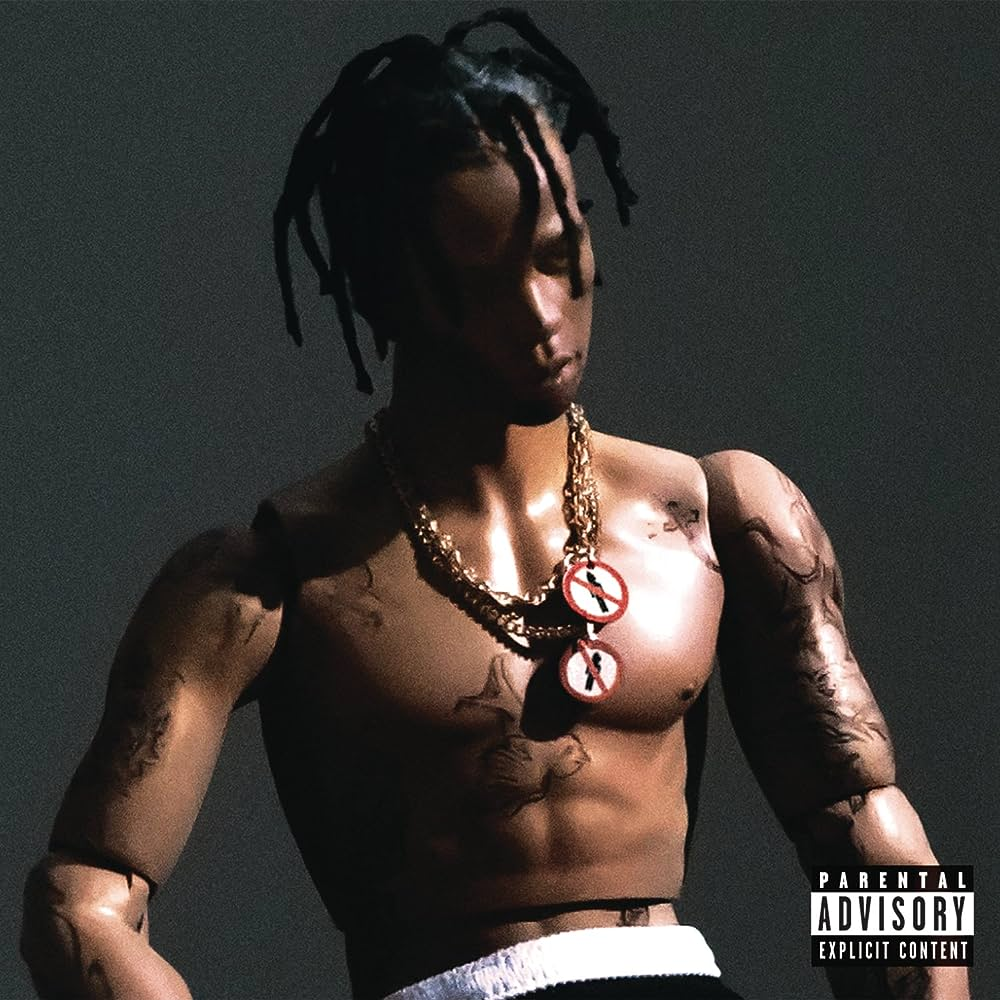

Astroworld
"Astroworld" is the title of Travis Scott's third studio album, which was released on August 3, 2018.
The album is named after the now-defunct Six Flags Astroworld amusement park in Houston, Texas, which
Travis frequently visited during his childhood. The album features a blend of hip-hop and trap music and
includes collaborations with various artists such as Drake, Kid Cudi, and The Weeknd.
 Listen now!
Listen now!
Rodeo
"Rodeo" is the debut studio album by American rapper, singer, and songwriter Travis Scott.
The album was released on September 4, 2015. "Rodeo" features a blend of hip-hop, trap, and
psychedelic elements and marked a significant moment in Travis Scott's career, helping to
establish him as a prominent figure in the rap and hip-hop music scene. The album includes
a variety of guest appearances from notable artists such as Kanye West, The Weeknd, Justin
Bieber, and more.

Listen now!
Utopia
Utopia is the fourth studio album by American rapper Travis Scott. It was released through Cactus Jack
and Epic Records on July 28, 2023. The album features guest appearances from Teezo Touchdown, Drake,
Playboi Carti, Beyoncé, Rob49, 21 Savage, the Weeknd, Swae Lee, Yung Lean, Dave Chappelle, Young Thug,
Westside Gunn, Kid Cudi, Bad Bunny, SZA, Future, and James Blake. Production was handled by a variety
of record producers, including Scott and James Blake themselves, WondaGurl, Kanye West, Allen Ritter,
Guy-Manuel de Homem-Christo, Wheezy, Buddy Ross, Vegyn, 30 Roc, Jahaan Sweet, Boi-1da, Vinylz, Tay Keith,
Bnyx, Oz, Justin Vernon, the Alchemist, Dom Maker, Illangelo, DVLP, and Metro Boomin, among others.
 Listen now!
Listen now!
{kind=link}